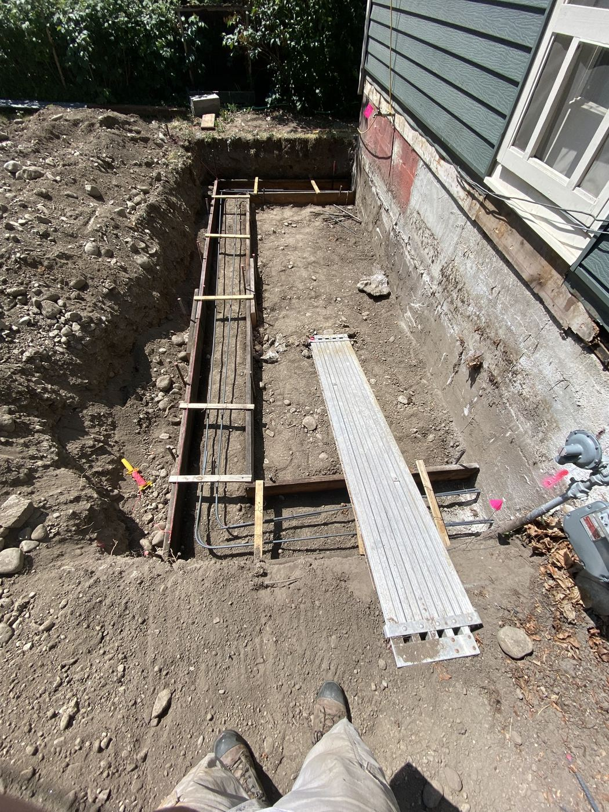
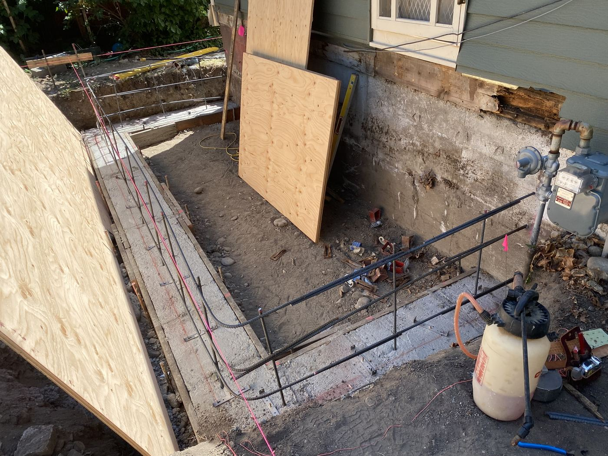
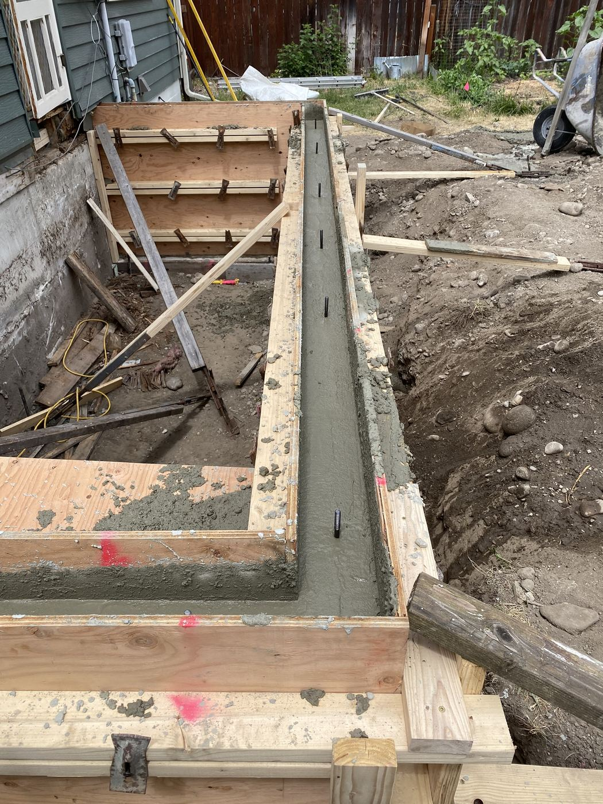
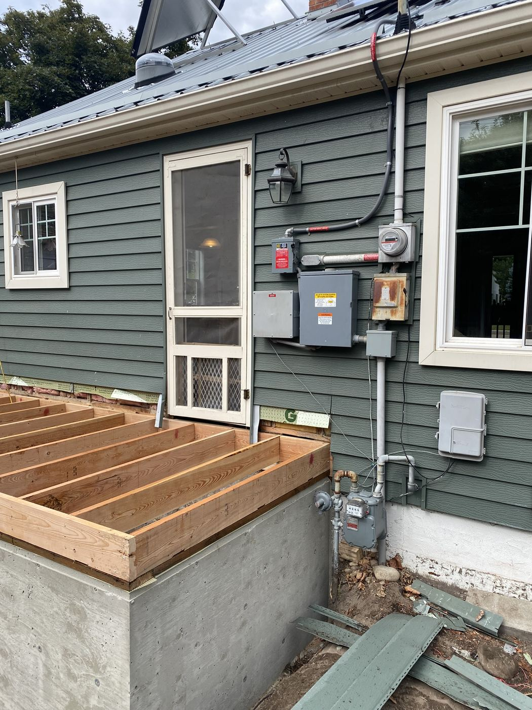
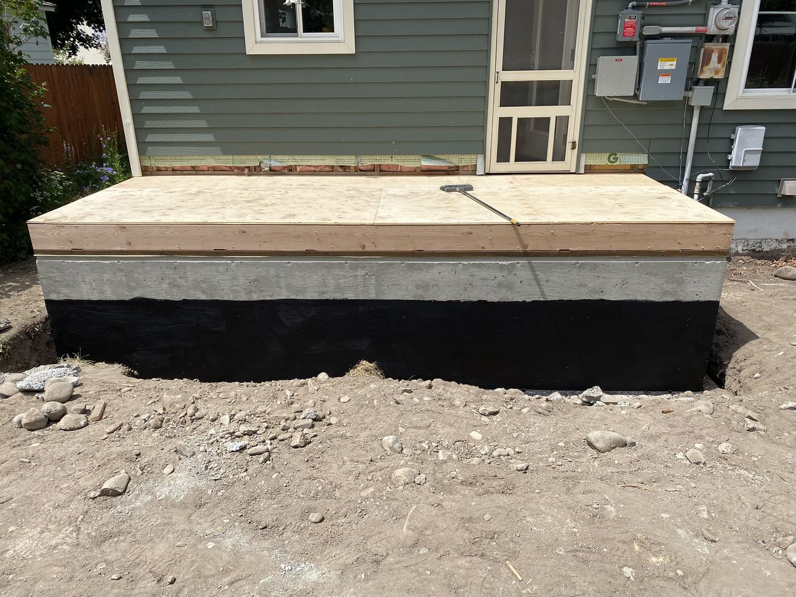
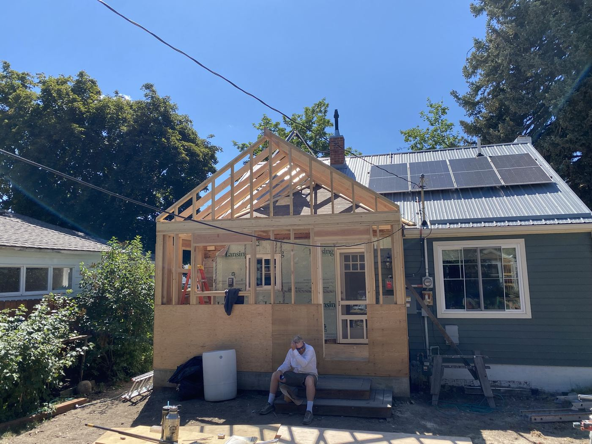
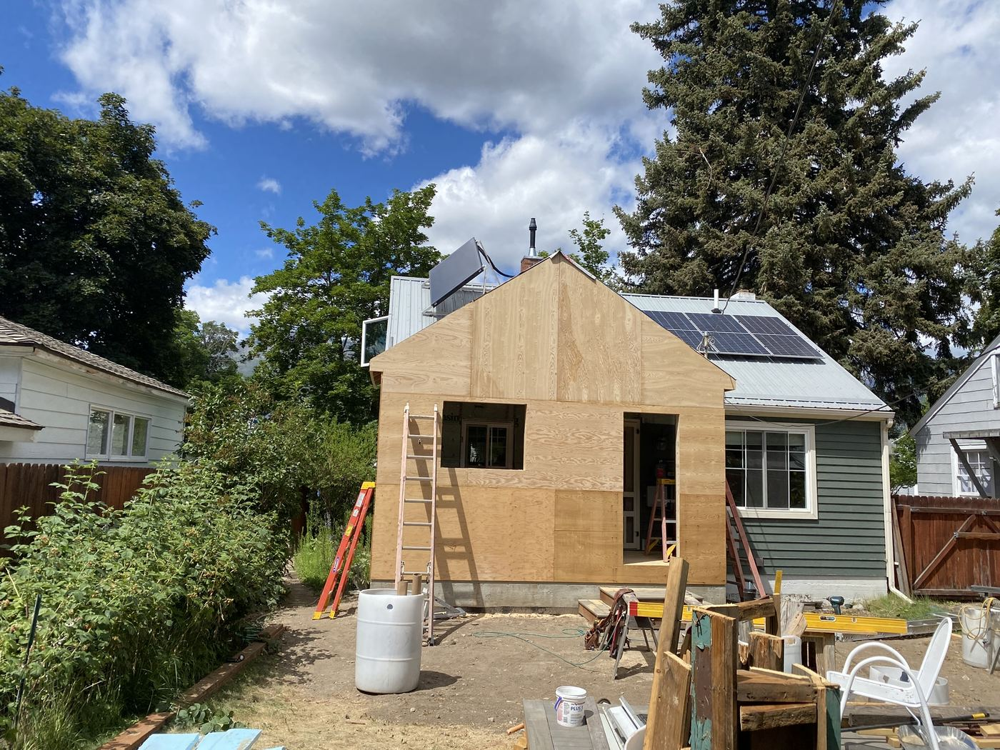
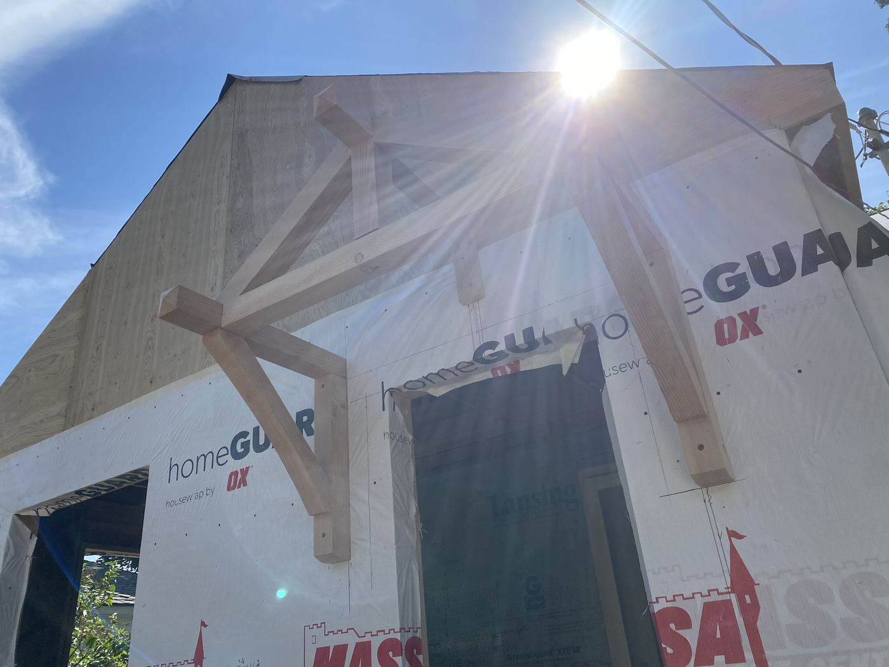
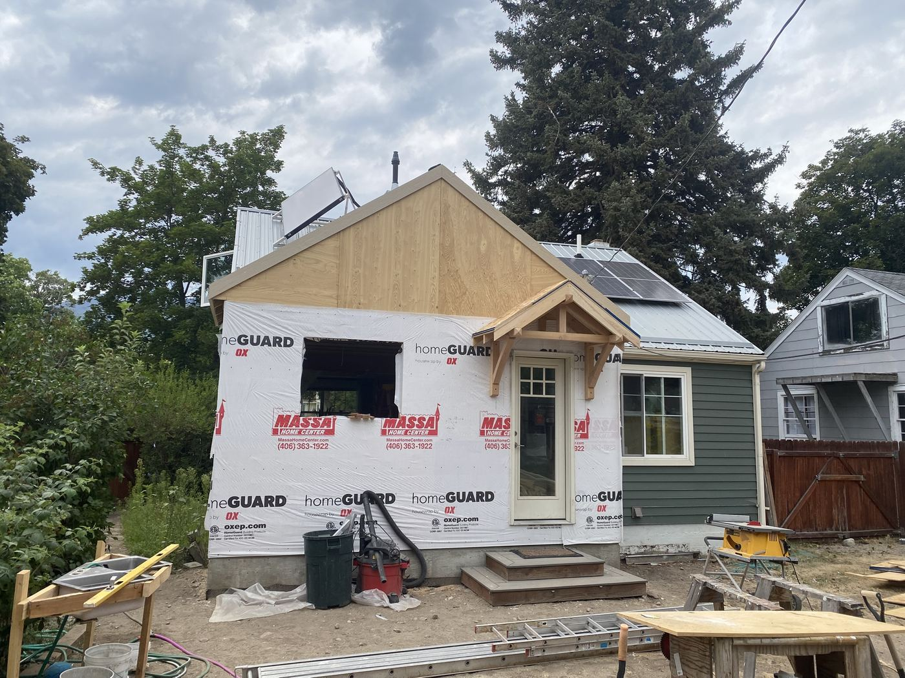
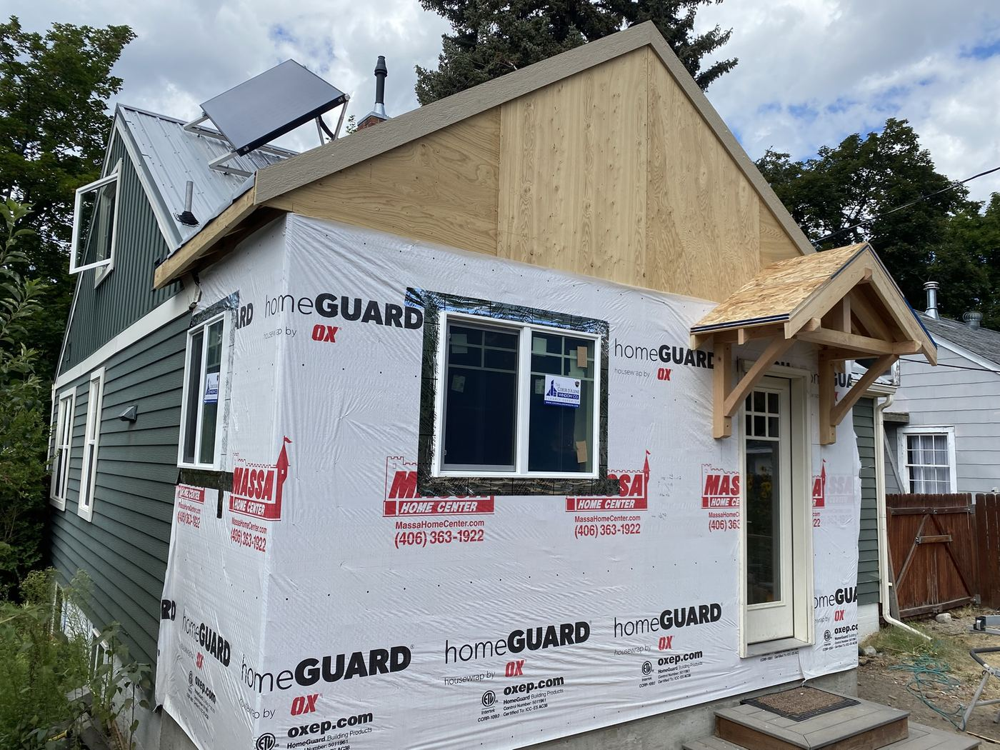

Bitterroot Valley, MT · Remodel / Addition
This addition expanded a tight kitchen into a full mudroom and dining space, built from the ground up: new footings and foundation wall, framed and poured, followed by floor joists, subfloor, and wall and roof framing tied into the existing house roofline. We also built decorative timber-frame-style knee brackets into the gable entry for a bit of custom character where the addition meets the street-facing side of the house.
Tying a new roofline cleanly into an existing structure — especially one with solar panels already on it, like this house — takes careful planning up front so the finished addition looks like it was always part of the house, not bolted on afterward.









